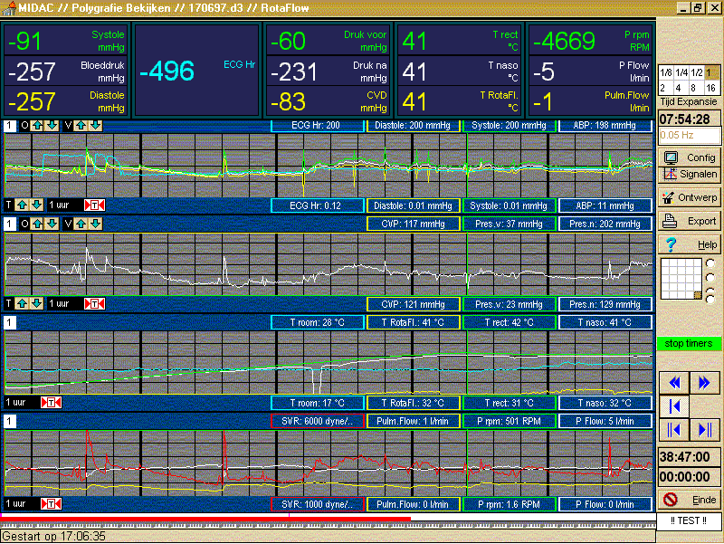

RF 2, Onset Systolische Bloeddruk
|
Registratie van een langdurig (48 uur) monitoring/bewakings-protocol, dat gebruikt is bij de evaluatie van verschillende bloedpompen. Hierbij is gebruik gemaakt van diverse mogelijkheden om de hoeveelheid te bewaren informatie sterk te beperken. Zo wordt bijvoorbeeld gelijktijdig met het hoogfrequent bemonsteren (100 Hz) de diastolische en systolische bloeddruk berekend. Het totale bloeddruk signaal wordt slechts gebruikt voor de alarmeringsfuncties, terwijl diastolische en systolische bloeddruk over 15 seconde gemiddeld worden bewaard in het data-bestand voor de uiteindelijke analyse.

© Instrumentele Dienst. Bijgewerkt op 8-12-1999.